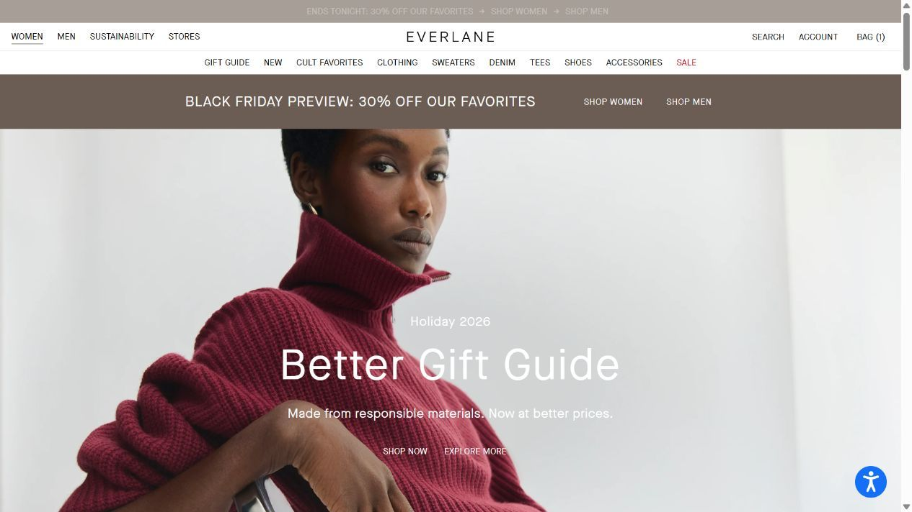
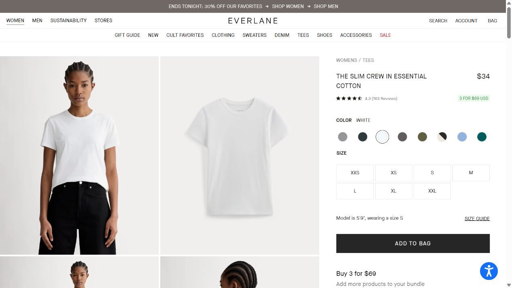
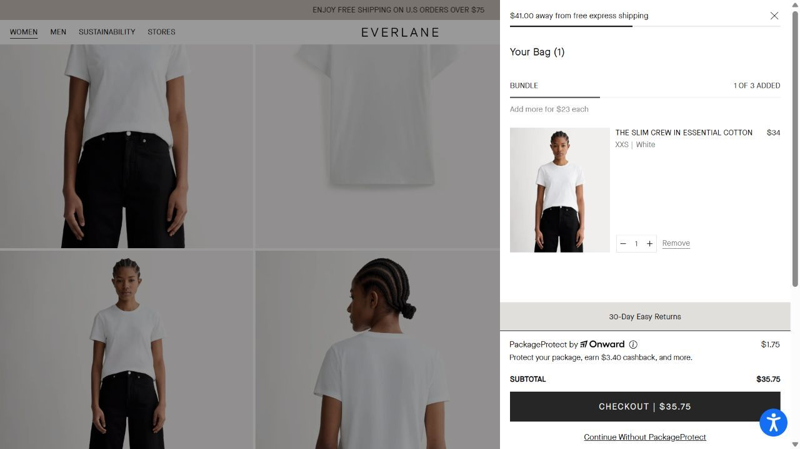
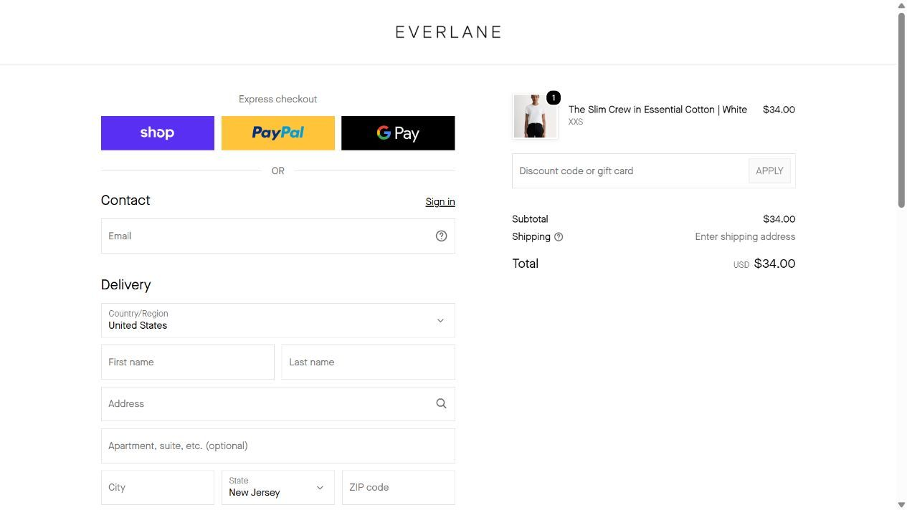

STUDY 03 / Everlane
Considered essentials.
Trust lives in the details.
Production information and restrained presentation invite careful choice; overlays and optional protection add decisions.
Original retailer routes: Homepage · Selected product · Store / cart entry. Session-state checkout URLs are not reproducible.
01 / CAPTURED EVIDENCE
The journey, in four screens.








Original browser captures extracted from the earlier research file. Click each image to read it at full size. Captures do not show every claim described in the session notes; those are distinguished below.
02 / OBSERVATION
What the original session recorded.
The sampled Slim Crew in Essential Cotton page combines model and garment images, restrained typography and structured controls. The original record notes fit, materials, factory, certification and sustainability sections; a three-for-$69 offer; and a 4.3 rating with 163 reviews, including incentivized-review disclosures. These are retailer representations, not a production audit.
03 / INTERPRETATION
Sage, with Caregiver cues
Materials and production explanations invite an informed purchase, suggesting Sage. Responsibility messaging adds Caregiver cues. The trustworthiness of an environmental claim depends on its evidence, not the calmness of its layout.
Design: function, hierarchy and expression
Light backgrounds, a repeated product-image grid, generous spacing and clear controls create a restrained system. Editorial portraiture adds aspiration. The sample offers little support for a strong postmodern classification; a seasonal overlay alone is insufficient.
04 / SHOPPING PATH
From product to the stopping point.
- The older Organic Cotton Crew route was unavailable; follow the replacement.
- Switch the replacement from black to White.
- Add one item; the actual bag records XXS, not the intended S.
- Inspect $34 item + $1.75 PackageProtect = $35.75.
- Choose “Continue without PackageProtect”; checkout shows a $34 item total.
- Stop at the displayed contact, delivery and payment form; no personal information entered.
A newsletter overlay interrupted shopping and reappeared over the bag in the original session notes. The bag’s prominent checkout total included protection while a smaller route allowed continuing without it. Shipping needed an address. The size mismatch in the bag is retained as a research error/limitation rather than silently treating the item as S.
05 / PERSUASION
Visible cue → possible mechanism → limit.
| Reading | Recorded cue | Interpretation & boundary |
|---|---|---|
| Authority | Factory, certification and material explanations. | Invite trust through information; the claims still require independent substantiation. |
| Social proof | Review ratings and customer-favorite messaging. | Review disclosures matter; neither volume nor an incentive establishes truth or falsity. |
| Scarcity / promotion | An ends-tonight promotional message in the original record. | A time-limited incentive; no inference about white-tee stock. |
| Incentive versus reciprocity | A discount offered for newsletter signup. | A conditional exchange, unlike giving useful styling freely. Bundle progress is not automatically consistency. |
06 / PROJECT IMPLICATION
What we take into On the Go.
Make optional actions clearly optional, avoid surprise additions and support product claims with evidence. A considered brand needs transparent choices as well as polished typography.
Follow this finding to a story and check →